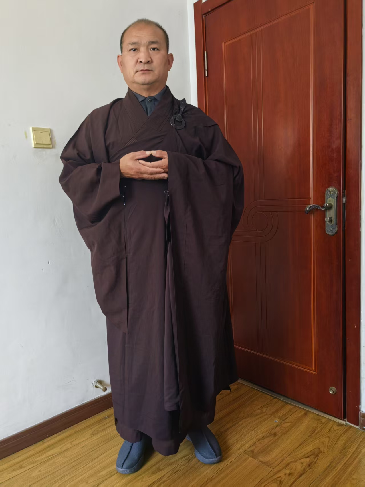

20260509我让孩子带了心经金刚经
修炼修行符咒术法风水布局 原始对话记录
斋戒日，必穿法衣
让孩子给拍了几张
受戒折腾的，轻了三斤
师父[强][强][强]
走路就这样
手是法界定印
手心像托一尊佛
放在胸口略下
手跟身体成九十度
今天不是六斋日吗
整天穿
我打算一月持一天
今天（略）
[憨笑][憨笑]又要喝酒了
我在家闲着没事，可以整天穿着打坐，读经
出去肯定不能穿
受菩萨戒就是人间大菩萨
穿着感觉不错
师父庄严师[合十][合十][合十]
以后就改变自己，正式讲课就穿法衣
庄重庄严
我也反思自己
整天嘻嘻呵呵，吃喝玩乐，很多学生不够重视
犯了错，师傅化解一下
化解了，继续犯
人生苦短，再不用心修炼，命运也改不了，疾病上身，悔之晚矣
吃饭去
今天研二研究生来问
上学两年，在宿舍睡了一年半
感觉很颓废
求指点
我说，你要做好日常，就是休闲
有很多学生都在做实验，很累
这学生的导师是我选的
副院长 ，刚提升了正院长，除了带这十几个学生，喝酒，也没啥事
女院长
论文，我调理着，发了一篇，只有毕业论文了
不就闲着没事了
我说，自己列个表，
每日去学校健身房锻炼，
再请教一下导师，提前写毕业论文
我看着今年还能发三篇
学生说，导师说了，写一篇英文的奖励一万
这不就有活干了
学生阶段，父母供吃喝
学费，学校发的也够了
没事干 这是福分
很多人被逼着打工
别把休闲当颓废
就像我，每天没事干，
那是因为我提前干好了
吃吃喝喝，休闲
今天很自然的，读了六遍楞严咒
一会，这孩子请吃火锅，
过午不食就免了
[憨笑][憨笑][憨笑][憨笑]
我自己解释，是大斋戒
戒的是心
不是表
我让孩子带了心经金刚经
早上晚上读
让孩子带上心经和金刚经：一段门内日常记录
一、本页是什么
这一页内容较杂，是一段门内日常记录的拼接：开头讲斋戒日穿法衣、结"法界定印"；中间插进一个研二学生的近况与劝解；末尾一句才点到标题——给孩子带经，早晚读。整理时按三层来读。
二、"戒的是心不是表"
记录里说，受菩萨戒后要"正式讲课就穿法衣"，被认为庄重；又自嘲"整天嘻嘻呵呵，吃喝玩乐，很多学生不够重视"。最后落在一句话上："是大斋戒，戒的是心，不是表。"
这句可看作本页的态度：形式（穿法衣、持斋）服务于内心的郑重，不是拿来比谁更虔诚的。
三、"别把休闲当颓废"
记录中段是一个具体的例子：一位研二学生"上学两年，在宿舍睡了一年半，感觉很颓废，求指点"。老师怎么答？原话是——
"你要做好日常，就是休闲。"
结合后文，给的其实是一份很朴素的任务清单（见下节）。记录者还自辩：自己"每天没事干"，是因为"提前干好了"；"学生阶段父母供吃喝、学费学校发够了，没事干是福分"。
四、那份"日常清单"
把原文零散语句收拢，大致是这几条：
| 事项 | 原文说法 |
|---|---|
| 列表 | "自己列个表" |
| 锻炼 | "每日去学校健身房锻炼" |
| 学业 | "请教导师，提前写毕业论文" |
| 家务 | 洗碗、拖地，"该干啥干啥" |
| 心态 | "别把休闲当颓废" |
（"做好日常"这条，可对照本集群《别过分管孩子》里同一思路。）
五、让孩子带《心经》《金刚经》
全页的落点只有一句："我让孩子带了《心经》《金刚经》，早上晚上读。"
按本站立场，这属于门内人的日常做法，是文化现象的记录：让孩子接触经典、养成早晚读诵的习惯。它不承诺读经就能带来何种现实结果，读者了解即可。
六、常见问题
问："受菩萨戒就是人间大菩萨"这话怎么理解？ 这是门内对戒律的褒扬式说法，属信仰表达，本页只作文化转述，不评断。
问：孩子读经能提高成绩吗？ 本页没有这个说法。教养与学业要靠日常督促与学习方法，读经本身不是提分手段。
问：为什么把"颓废"和"休闲"分开讲？ 记录的立场是"闲不是错，空耗才是"——有安排地休息和无所事事地拖延，是两回事。
七、提醒
- 本页按门内生活与修习记录整理，仅作传统宗教文化了解；
- 涉及孩子的学习与情绪困扰，应以科学方法应对，必要时咨询专业人员；
- 读经、持斋等做法，读者可自行了解，勿作功效预期。